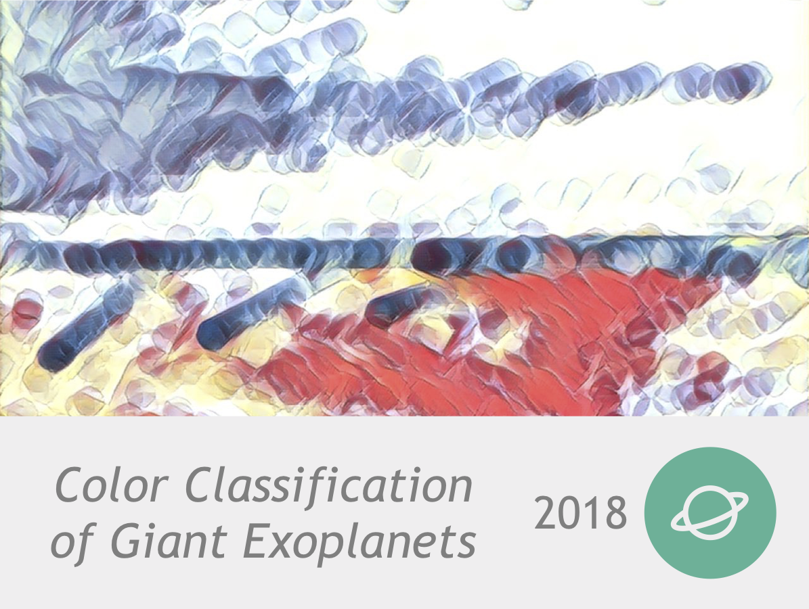
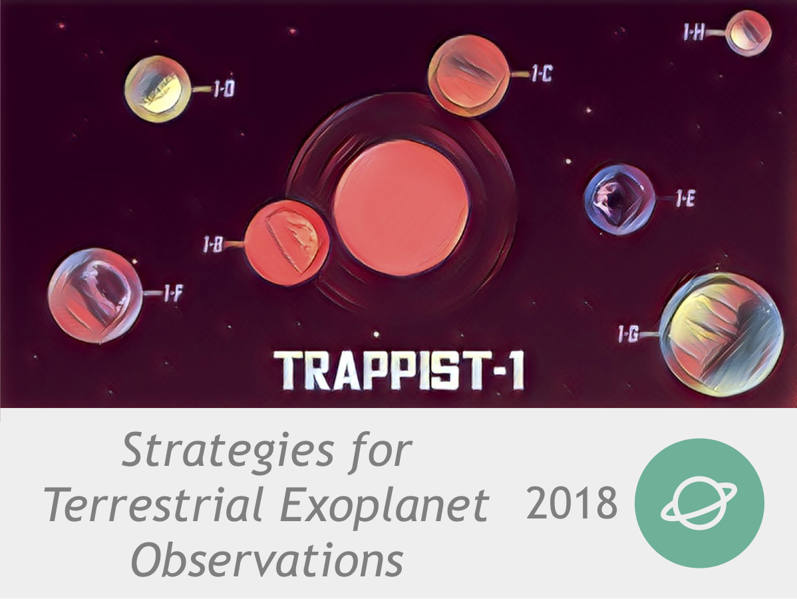
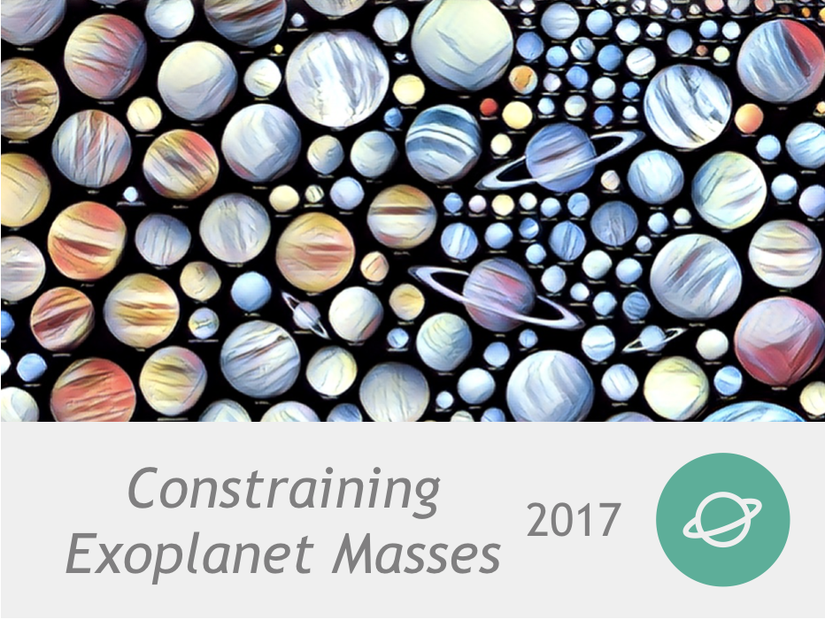
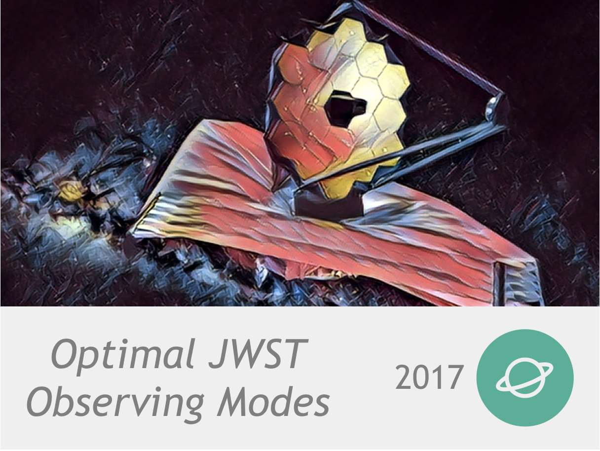
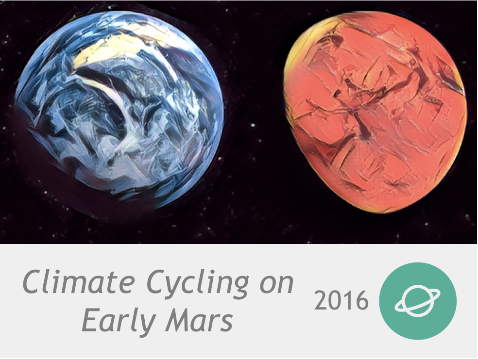
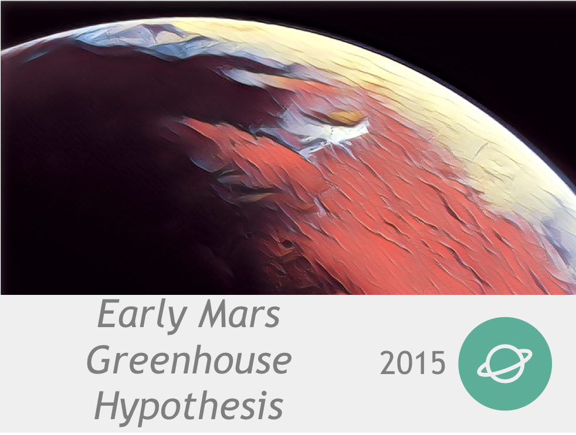
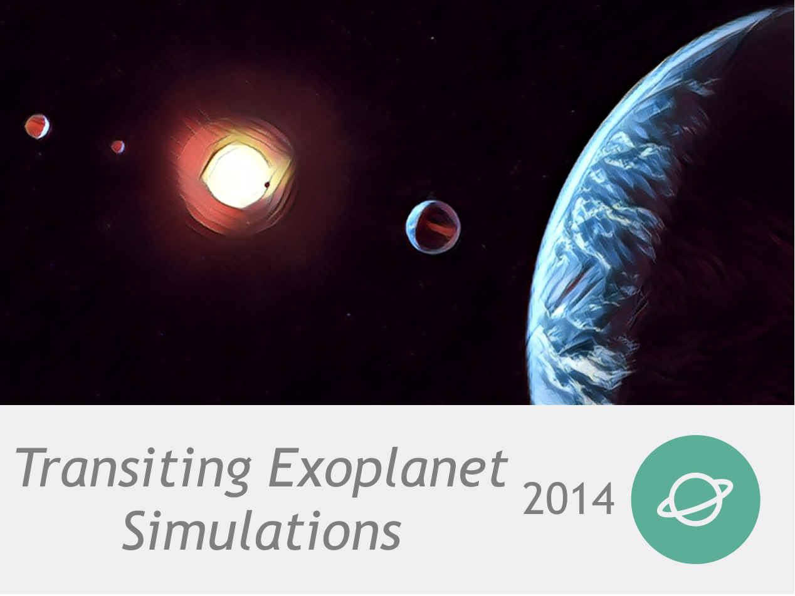

<!DOCTYPE html>
<html lang="en">
	<head>
		<!-- Global site tag (gtag.js) - Google Analytics -->
		<script async src="https://www.googletagmanager.com/gtag/js?id=UA-138985908-1"></script>
		<script>
		  window.dataLayer = window.dataLayer || [];
		  function gtag(){dataLayer.push(arguments);}
		  gtag('js', new Date());

		  gtag('config', 'UA-138985908-1');
		</script>
		<meta charset="UTF-8">
		<title>Research | Natasha Batalha</title>
		<meta name="description" content="Research work of Natasha Batalha">
		<meta name="keywords" content="James Webb Space Telescope, JWST, exoplanets, atmsopheres, transit spectroscopy, exoplanet characterization">
		<meta http-equiv="X-UA-Compatible" content="IE=edge">
		<meta name="viewport" content="width=device-width, initial-scale=1">
		<!-- FAVICON -->
		<link rel="icon" type="image/png" href="assets/img/favicon.png">
		<!-- FONTS -->
		<link rel="stylesheet" href="assets/fonts/fontawesome/font-awesome.min.css">
		<link rel="stylesheet" href="assets/fonts/iconsmind/iconsmind.css">
		<!-- STYLESHEETS -->
		<link rel="stylesheet" href="assets/css/plugins.min.css">
		<link rel="stylesheet" href="assets/css/style.css">
		<link rel="stylesheet" href="https://cdnjs.cloudflare.com/ajax/libs/font-awesome/4.7.0/css/font-awesome.min.css">
	</head>
	<body>
		<div class="vl-site-holder animsition vl-footer-fixed">
			<header class="vl-header-holder" data-header-fixed="1">
				<div class="container">
					<div class="vl-header-inner">
						<div class="vl-header-left">
							<a href="index.html" class="vl-header-logo">
								<h1 style="font-size: 18px; margin: 0; letter-spacing: 2px;">NATASHA BATALHA</h1>
							</a>
						</div>
						<div class="vl-header-right">
							<nav class="vl-navigation-standard">
								<ul>
									<li><a href="index.html">Home</a></li>
									<li class="current-menu-item"><a href="research.html">Research</a></li>
									<li><a href="software.html">Software</a></li>
									<li><a href="content.html">Content & Resources</a></li>
									<li><a href="news.html">News & Updates</a></li>
								</ul>
							</nav>
						</div>
					</div>
				</div>
			</header>
			<div class="vl-content-holder">
				<div class="vl-hero-title-holder jarallax" style="background-image: url('assets/img/index.jpg');">
					<div class="vl-hero-title-inner">
						<h1 class="vl-hero-title">RESEARCH</h1>
						<p class="vl-hero-subtitle">Exploring the atmospheres of other worlds.</p>
					</div>
				</div>
				<!-- /.vl-hero-title-holder -->
				<main class="vl-main-holder vl-main-padding">
					<div class="container">
						<div class="vl-portfolio-grid cubeportfolio" id="cubeportfolio">
							<article class="cbp-item vl-portfolio-grid-item vl-portfolio-style2 portfolio_category-research">
								<div class="vl-portfolio-grid-image">
									<a class="vl-portfolio-grid-link" href="color-color.html">
									
									</a>
								</div>
								<div class="vl-portfolio-grid-content">
									<h5 class="vl-portfolio-grid-title">Three carefully chosen photometric points of directly imaged planets could help tease out interesting targets for follow-up.</h5>
								</div>
							</article>
							<article class="cbp-item vl-portfolio-grid-item vl-portfolio-style2 portfolio_category-research">
								<div class="vl-portfolio-grid-image">
									<a class="vl-portfolio-grid-link" href="trappist.html">
									
									</a>
								</div>
								<div class="vl-portfolio-grid-content">
									<h5 class="vl-portfolio-grid-title">Terrestrial exoplanet observations of TRAPPIST-1-like habitable-zone planets will need ~10 tranists.</h5>
								</div>
							</article>
							<article class="cbp-item vl-portfolio-grid-item vl-portfolio-style2 portfolio_category-research">
								<div class="vl-portfolio-grid-image">
									<a class="vl-portfolio-grid-link" href="masses.html">
									
									</a>
								</div>
								<div class="vl-portfolio-grid-content">
									<h5 class="vl-portfolio-grid-title">Highly constrained planet masses are needed to break degeneracies in exoplanet transit transmission spectra.</h5>
								</div>
							</article>
							<article class="cbp-item vl-portfolio-grid-item vl-portfolio-style2 portfolio_category-research">
								<div class="vl-portfolio-grid-image">
									<a class="vl-portfolio-grid-link" href="ic.html">
									
									</a>
								</div>
								<div class="vl-portfolio-grid-content">
									<h5 class="vl-portfolio-grid-title">The combination of JWST's NIRISS SOSS and NIRSpec G395H give transit transmission spectra with most information content.</h5>
								</div>
							</article>
							<article class="cbp-item vl-portfolio-grid-item vl-portfolio-style2 portfolio_category-research">
								<div class="vl-portfolio-grid-image">
									<a class="vl-portfolio-grid-link" href="marscycle.html">
										
									</a>
								</div>
								<div class="vl-portfolio-grid-content">
									<h5 class="vl-portfolio-grid-title">4 billion years ago Mars could have flip flopped between warm and frozen climates</h5>
								</div>
							</article>
							<article class="cbp-item vl-portfolio-grid-item vl-portfolio-style2 portfolio_category-research">
								<div class="vl-portfolio-grid-image">
									<a class="vl-portfolio-grid-link" href="marsh2.html">
										
									</a>
								</div>
								<div class="vl-portfolio-grid-content">
									<h5 class="vl-portfolio-grid-title">Early Mars could've stayed warm with a thick greenhouse atmosphere made of Hydrogen and Carbon Dioxide</h5>
								</div>
							</article>
							<article class="cbp-item vl-portfolio-grid-item vl-portfolio-style2 portfolio_category-research">
								<div class="vl-portfolio-grid-image">
									<a class="vl-portfolio-grid-link" href="whitepaper.html">
										
									</a>
								</div>
								<div class="vl-portfolio-grid-content">
									<h5 class="vl-portfolio-grid-title">In order to get high enough SNR on the atmospheres small temperate planets with JWST, we will have to stack many transits.</h5>
								</div>
							</article>
						</div>
					</div>
				</main>
				<!-- /.vl-main-holder vl-main-padding -->
			</div>
			<!-- /.vl-content-holder -->
			<footer class="vl-footer-holder vl-footer-minimal" data-footer-fixed="1">
				<div class="vl-footer-inner">
					<div class="container">
						<div class="text-center">
							<div class="vl-footer-menu">
								<div>
									<ul class="icons">
							<li>
								<div>
									<a href="https://github.com/natashabatalha" class="icon style2 fa-github" id="icon-github" target="_blank">	
									</a>
									<div class="label-icon" id="label-icon-github">GitHub
									</div>
								</div>
							</li>
							<li>
								<div>
									<a href="natashabatalhaCV.pdf" class="icon style2 fa-file-text-o" id="icon-cv" target="_blank">
									</a>
									<div class="label-icon" id="label-icon-cv">CV
									</div>
								</div>
							</li>
							<li>
								<div>
									<a href="http://adsabs.harvard.edu/cgi-bin/nph-abs_connect?db_key=AST&db_key=PRE&qform=AST&arxiv_sel=astro-ph&arxiv_sel=cond-mat&arxiv_sel=cs&arxiv_sel=gr-qc&arxiv_sel=hep-ex&arxiv_sel=hep-lat&arxiv_sel=hep-ph&arxiv_sel=hep-th&arxiv_sel=math&arxiv_sel=math-ph&arxiv_sel=nlin&arxiv_sel=nucl-ex&arxiv_sel=nucl-th&arxiv_sel=physics&arxiv_sel=quant-ph&arxiv_sel=q-bio&sim_query=YES&ned_query=YES&adsobj_query=YES&aut_logic=OR&obj_logic=OR&author=Batalha%2C+Natasha+&object=&start_mon=&start_year=&end_mon=&end_year=&ttl_logic=OR&title=&txt_logic=OR&text=&nr_to_return=200&start_nr=1&jou_pick=NO&ref_stems=&data_and=ALL&group_and=ALL&start_entry_day=&start_entry_mon=&start_entry_year=&end_entry_day=&end_entry_mon=&end_entry_year=&min_score=&sort=SCORE&data_type=SHORT&aut_syn=YES&ttl_syn=YES&txt_syn=YES&aut_wt=1.0&obj_wt=1.0&ttl_wt=0.3&txt_wt=3.0&aut_wgt=YES&obj_wgt=YES&ttl_wgt=YES&txt_wgt=YES&ttl_sco=YES&txt_sco=YES&version=1" class="icon style2 fa-file-text-o" id="icon-publications" target="_blank">	
									</a>
									<div class="label-icon" id="label-icon-publications">Publications
									</div>
								</div>
							</li>
							<li>
								<div>
									<a href="mailto:natasha.e.batalha@nasa.gov" class="icon style2 fa-envelope-o" id="icon-email" >
									</a>
									<div class="label-icon" id="label-icon-email">Email
									</div>
								</div>
							</li>

						</ul>
								</div>
							</div>
						</div>
					</div>
				</div>
			</footer>
			<!-- /.vl-footer-holder -->
		</div>
		<!-- /.vl-site-holder -->
		<a href="#" class="vl-back-to-top hidden"><i class="fa fa-angle-up"></i></a>
		<!-- /.vl-back-to-top -->
	</body>
	<!-- SCRIPTS -->
	<script src="assets/vendors/jquery.min.js"></script>
	<script src="assets/scripts/plugins.min.js"></script>
	<script type="text/javascript">
		jQuery.noConflict()(function($){
			var gridContainer = $('#cubeportfolio');
			gridContainer.imagesLoaded(function(){
				gridContainer.cubeportfolio({
					defaultFilter: '*',
					animationType: 'fadeOut',
					layoutMode: 'grid', //mosaic
						sortToPreventGaps: true,
					gapHorizontal: 30,
					gapVertical: 30,
					gridAdjustment: 'responsive',
					mediaQueries: 
					[{
						width: 1170,
						cols: 3,
					}, {
						width: 991,
						cols: 3,
					}, {
						width: 767,
						cols: 2,
					}, {
						width: 575,
						cols: 1,
					}],
					displayType: 'default',
					displayTypeSpeed: 150,
				});
			});
		});
	</script>
	<script src="assets/scripts/script.js"></script>
</html>
